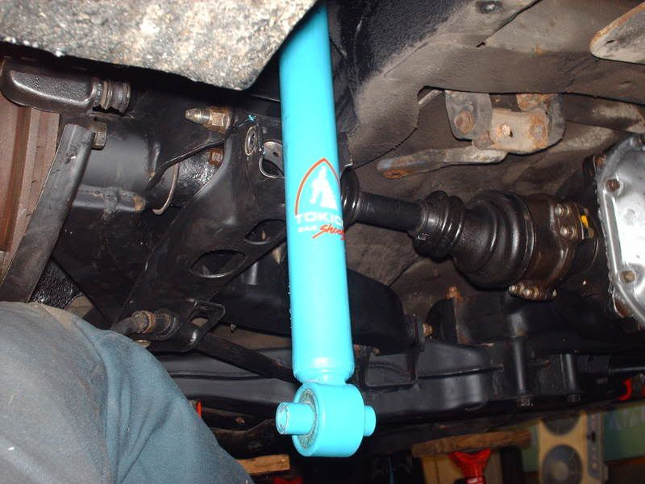

-
these J30 input shafts are 7-1/16 inches and 5-5/16 inches.
It also appears that the Z32 and Z31 input shafts have more meat on the splines than the J30 models.1984 300ZXT
1986 300ZX 2x2 NA2T
2000 Porsche Boxster
2007 Toyota Yaris -
Therefore one could gain an extra 5/16'' on one side by using the Z32 stub and sticking with the j30 stub for the other side. Right?"produce first.talk second." -
Possibly. The only part of the input shafts that affect axle length is the dust sheild back. You can't consider the whole shaft.
I have a Z32 diff lying around without its input shafts. When I put my set of J30 input shafts in it, the longer end doesn't seat all the way in the hole because it strikes the end of the other shaft, leaving about 2mm of a gap. This means that overall the Z32 input shafts and diff housings are designed differently. I don't know if this problem would fix itself once the VLSD unit is put into a Z31 housing. But, to fix this I could easily trim down the longer end to make it fit.
If I were to use a Z32 diff, then I would stick with the input shafts that came with it. They appear to be made much stronger than the J30 varients anyways.
If one was to swap input shafts though, it is important to make sure that they seat properly with the c-clip properly in place.1984 300ZXT
1986 300ZX 2x2 NA2T
2000 Porsche Boxster
2007 Toyota Yaris -
All this talk of needing to cut and machine things got me a little worried about the validity regarding the Tri-Tri method as i never correctly checked bind along the arms full arc
Doing a little searching on HybridZ i discovered the correct method by removing the shock, swaybar, and spring. Then moving the arm by hand to feel any bind.
And im proud to say the Tri-Tri method is now worry free, even with the taller 88 hub flanges :sorc
Conclusion: what you trade in strength, you get back in ease of instillation
Tested from full droop, to well beyond bottoming out. No jack stands for the doubters
 -
If you are referring to the above post, then you may have to do something to add a little slack. The only real way to find out is to put everything together and then check for binding for the whole travel of the control arm.85NA2T wrote: Will this swap still work if you have the shorter control arms and companion flanges?I have an 85 NA.1984 300ZXT
1986 300ZX 2x2 NA2T
2000 Porsche Boxster
2007 Toyota Yaris -
So if i understand this whole thing correctly(correct me if im wrong) but to make the hybrid shafts all i have to do is put the inner CV joint on my z31 halfshaft?I know there is more to it but is that one of the methods?Just trying to get a real good understanding for this as i plan on doing this in the near future. also wil the helical lsd work with this swap as well?"If your car cant do a burnout from a 60mph rolling start, then your engine needs more work."
"Nitrous doesn't blow up motors; Idiots with nitrous blow up motors."
Shooting for 500whp

-
the distance is all the same on OE matched arms/flanges
87-89 arms + 84-86 flanges = +10mm extra lateral distance from the diff's flange to the hub flange
84-86 arms + 87-89 flanges = -10mm
i highly recommend using the later arms and early flanges for the room it gives you -
Thank you. Halfshafts from 87-89 are the exact same length as halfshafts from 84-86. So many people can't wrap their mind around this..88sinZ wrote: the distance is all the same on OE matched arms/flanges
87-89 arms + 84-86 flanges = +10mm extra lateral distance from the diff's flange to the hub flange
84-86 arms + 87-89 flanges = -10mm
i highly recommend using the later arms and early flanges for the room it gives you"produce first.talk second." -
I was planning on doing a vlsd swap, I like method 1 it sounds like, but I was looking on ebay and I came across a Nissan 180SX with a RPS13 chassis differntial http://cgi.ebay.com/ebaymotors/ws/eBayI … 0238315994
would this be the same as in a 240sx?
also watching some z32 na and tt differntials, would there be an advantage using one or the other, i know they are the same gear ratio, and one is 5 bolt one is 6, but using method one it would seem like that wouldnt matter.Whats torque?
The definition of torque is; when you wake up in the morning with "morning wood" and are trying to pee. When you push down on your woody, it makes you stand up on your tip toes. That my friend is torque.
-Racinjitter -
mike86z31 wrote:
also watching some z32 na and tt differntials, would there be an advantage using one or the other, i know they are the same gear ratio, and one is 5 bolt one is 6, but using method one it would seem like that wouldnt matter.
They are not the same gear ratio.... -
hey i found this site with j30 axles, http://www.automotix.net/usedautoparts/ … #OE659166L
just making sure these would be the correct ones to use with method oneWhats torque?
The definition of torque is; when you wake up in the morning with "morning wood" and are trying to pee. When you push down on your woody, it makes you stand up on your tip toes. That my friend is torque.
-Racinjitter -
Those would be appropriate for a Tri-Tri setup.
This is supposed to be a home-brew setup geared towards the broke ass Z31 owners. JY has these for like $10.. Why buy new when your tearing them apart anyways?"produce first.talk second." -
i've been searching junkyards for a J30 rear…when spinning one wheel,the other turns in the opposite direction, similar to a open rear....is this normal for a VLSD??? THX,MIKE -
Thats what happens when they get worn out. Your options are to shim it up for more breakaway torque, or find a different one.
Honestly, I would shim even a brand new one up. Remember, it comes out of a luxury touring sedan..its not an aggressive differential. Mine is shimmed. Both wheels turn the same way when the car is up on stands."produce first.talk second." -
For anyone doing this conversion please note:
1990-1996 Infinity Q45 input shaft (parts that plug into the diff) will only work on those diffs! You cannot put 90-96 Q45 input shafts into any other VLSD. Later Q45 are a different story as they have 5 bolt flanges instead of 6.
The twin turbo R230 shafts also have to stay with the R230 diff. Although I HIGHLY doubt anyone will be going this route due to the extensive modification needed to make it work, I thought I would mention it.85 Z31 6.0 LSX turbo 766whp/792wtq
04 GTO, LS6, big cam, porting, N20… underway for summertime daily driver.


Copyright © 2006–. All rights reserved. Privacy Policy